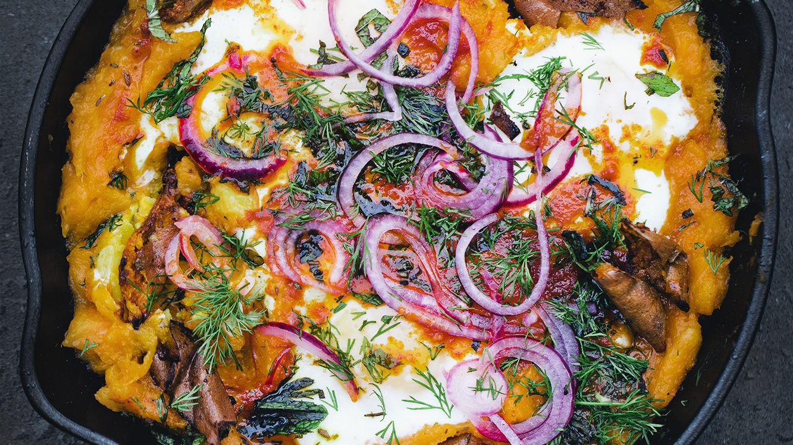

Welcome to our Green Kitchen
Here we cook and eat healthy and simple vegetarian
food with natural ingredients, whole grains, good fats,
fruit and vegetables. Please e-mail David or Luise if you
have any questions or just want to say hi!
Sweet Potato, Aubergine & Tahini
Salad
Here is a salad we made for my sister's birthday. It's
packed with flavor and perfectly combines crunchy
(lettuce, nuts, cucumber) with creamy (tahini and
roasted vegetables). A salad that is more than a salad.
Winter Holiday Saffron & Millet Salad
This saffron and cinnamon studded grain salad with
roasted roots, herbs, pomegranates and nuts is
perfect for the holidays + Christmas Recipe Roundup!
Aran’s Double Chocolate & Buckwheat
Cookies
These cookies from Aran Goyoaga new cookbook are
naturally gluten-free with a delicious hint of fennel.
We also made them vegan. Try the cookies and read
our conversation with Aran.

Sweet Potato Shakshuka
This is an untraditional but delicious take on
Shakshuka with a sweet potato base and crunchy
roasted sweet potato skin on top. The recipe is from
the new book Shelf Love from Ottolenghi Test Kitchen.
Vegan Oyster Mushroom Caesar Salad
The star of this Vegan Caesar Salad is the oyster
mushrooms that we sear using a special pressing
method that makes it umami-rich and crunchy on the
outside while juicy and flavor-packed inside.
Summer Love Letter + Zucchini Soup
This is a love letter to Swedish summer – to walking
barefoot, swimming in lakes, eating strawberries
every day, making potato sandwiches and cooking a
delicious zucchini soup with lots of toppings.
Lemon, Polenta & Ricotta Cake
We just created the perfect combination of an Italian
cheesecake and a soft crumb almond cake. With
creamy ricotta, a hint of polenta and an upside-down
lemon surprise. It's a real treat!
The Creamiest Greenest One-Pot Pasta
Everybody loves a quick and comforting pasta recipe.
Here is how to make the creamiest kale pasta you've
ever tried. You only 15 minutes, a few ingredients, a
sauce pan and a blender!
Welcome to our website!
Home to all our recipes, videos and books.
Hello and welcome.
We started Green Kitchen Stories back in 2009! — and
the site has basically not changed at all since the very
beginning. But after years of talking about a redesign, we
finally got it done. This is Green Kitchen Stories 2.0 and we
are really happy with how it has turned out.
There is a new and totally improved recipe archive where you
can see preview images of all the recipes and scroll or filter
the categories. A Life & Travel section where we have
gathered some of our travel guides and photos and posts
about the kids. A much improved book section and a new
video section. We will also be adding a shop later on that we
are very excited about!
Hope you will enjoy the new site!
Big love!